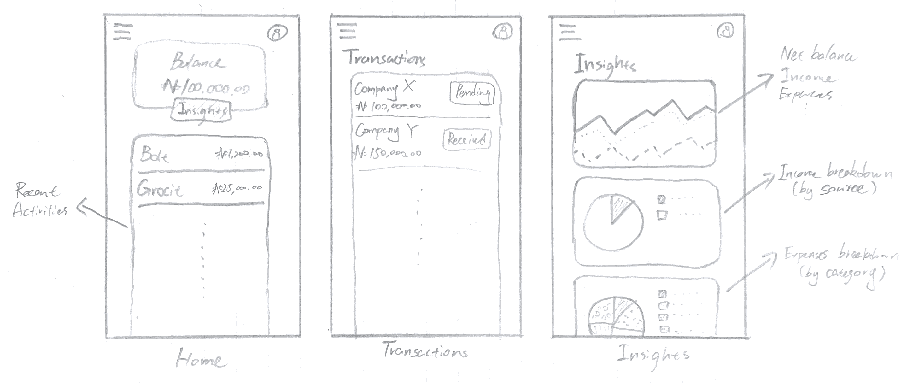
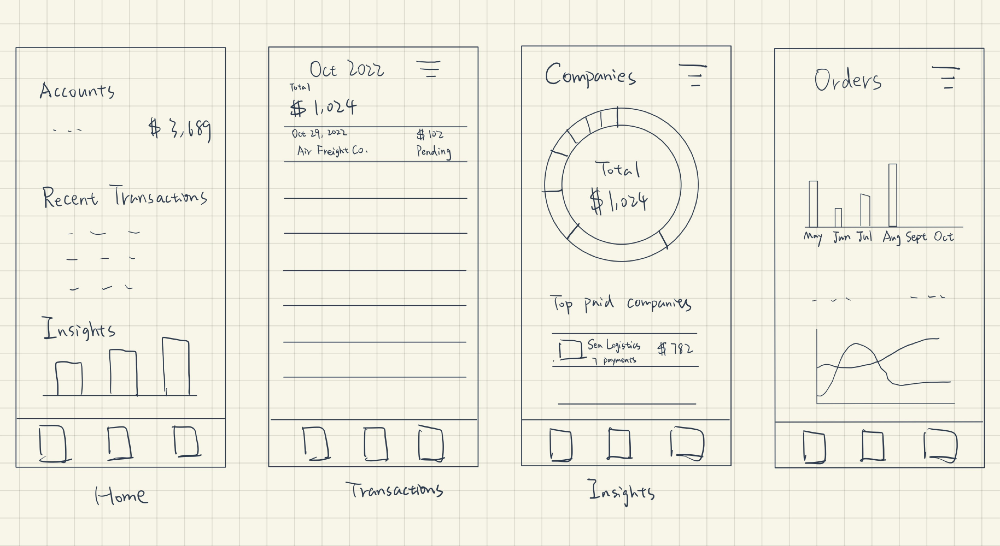
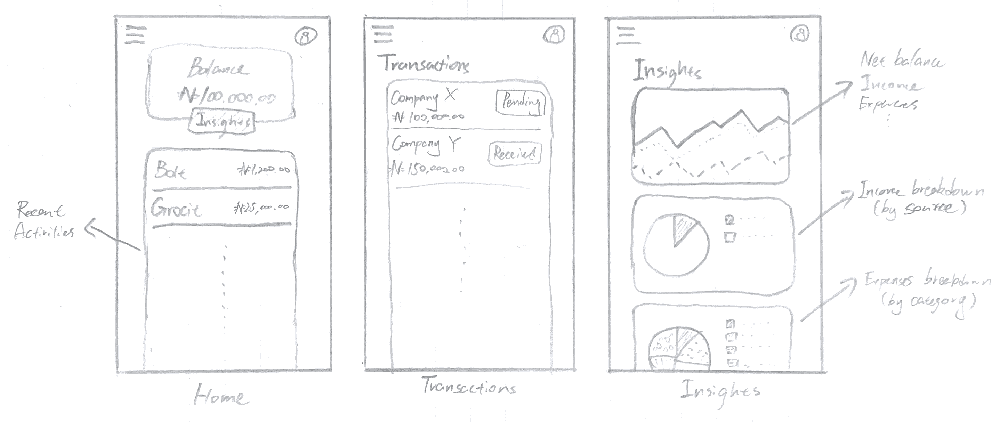
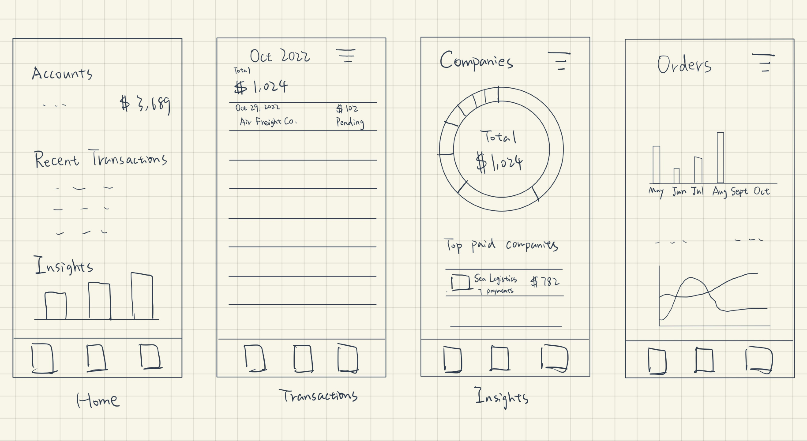

Iterative Design

Iterative design is an important industry practice for designing UIUX products. However, many small businesses and startups need access to possible feedback and critics of their user interfaces.
In this project, we decide to take on an iterative design process for a small start-up company Pivo and create an iOS app user interface catering to its users and banking services.
The Startup - Pivo
With the high economic growth in Africa, workers in the freight carrier industry enjoy its benefit while suffering from the long turnaround time for payment, which leads to severe cash flow problems. Pivo proposes a solution to this problem by designing a platform that allows freight carriers to collect, make and track payments in one place. The application now focuses on serving truck drivers and owners and provides bank account, debit card, and digital invoicing tools so they can better manage their finance.

I. Ideation
Sketching
 



Wireframing
After finishing the drafting and discussing our solutions, we combined our idea and made the following wireframe, which includes four pages of the interface.

II. Hi-Fi Mockup
To gain more feedback for our proposed framework, we built a hi-fi mockup based on our low-fi prototype, presented our mockup to other fellow UIUX designers in a studio, and got the following critics.
Home Page
- Change the color of the home page button (the blue button and the blue card can give people the impression that they are correlated).
- For better security, only keep the last four digits visible on the card.
- For the transaction details page of a card, the date 06 Oct 2020 needs to be clarified.
Invoices Page
- Change the total amount of transactions into percentage transacted.
- Red for expenditure and green for income to enhance the visual cue.
- Transaction date can be deleted for a pending order.
Insights Page
- Add an exit button for the details page of insights.
- Change the color of the text from purple to something else to differentiate it from the purple background on the detailed insights page.
We made some refinements to our mockup incorporating the feedbacks. Below is our final version.
III. User Testing
After editing the Hi-Fi prototype, we used UserTesting.com to conduct online user testing. Three users were asked to complete a series of tasks in our app given the following instructions.
Test Instructions
Context
The prototype you’ll be testing is a smart-banking app for those who receive multiple one-time payments from different sources. The app helps users track all their invoices in one place and get insights into their income.Tasks
Assume you are a truck driver who delivers goods for multiple companies and gets paid for each order you complete.
Track Invoices
The turnover period of transactions can be quite long. You have completed multiple orders as a truck driver, but some of your payments are long overdue.
- Try to contact (find the contact button) the company that has an overdue payment in October.
- Filter out all the overdue invoices
Gain Financial Insights
After receiving the payment, you are curious about the changes in your financial situation throughout the year. Luckily, our app provides data analytics that tracks such changes. Head to the app and find the following insights:
- Find the month from January to June with the lowest income.
- Find out which company paid you the most in May.
Results
While the users are reacting to the interface and performing the task, their reactions and responses are recorded in a video and we summarized them in the following table.
| Task \ User |

alexo
52, Male (Australia)
|

veronaskylark
33, Female (U.S.)
|
EducatorPossible
33, Male (U.S.)
|
|
|---|---|---|---|---|
|
A1. Try to contact (find the contact button for) the company that has an overdue payment in October. |
Ease | 3/5 | 4/5 | 4/5 |
| Completion | No | Yes | Yes | |
| Difficulties |
|
|||
| Potential solutions |
|
|||
| A2. Filter out all the overdue invoices. | Ease | 5/5 | 5/5 | 5/5 |
| Completion | Yes | Yes | Yes | |
| Difficulties |
|
|||
| Potential solutions |
|
|||
| B1. Find the month from January to June with the lowest income. | Ease | 5/5 | 5/5 | 5/5 |
| Completion | Yes | Yes | Yes | |
| Difficulties | N/A | |||
| Potential solutions | N/A | |||
| B2. Find out which company paid you the most in May. | Ease | 5/5 | 3/5 | 3/5 |
| Completion | Yes | No (not sure if completed) | No (not sure if completed) | |
| Difficulties |
|
|||
| Potential solutions |
|
|||
Analysis
- The overall responses we received from the users regarding our interface are positive. Users were able to finish most of the assigned tasks with relative ease.
- Some difficulties and subsequent errors stem from the UserTesting/Figma websites failing to display the complete testing interface. Next time we conduct similar testing, we will add more instructions at the start of the test to ensure users can see the entire prototype.
- The most prominent issue we discovered about the interface was the word choice in the Insights tab. All three users complained about ambiguity in the term “last month” in statements like “Company X paid you the most last month”: they were unsure whether the term referred to the currently highlighted month or the month prior to it. Our proposed solution is to use the actual name of the highlighted month rather than “last month” to avoid any ambiguity.
- User 2 manually spotted all overdue invoices rather than using the filter. This suggested a plausible learnability issue in our pull-down filter menu. A potential solution is to be more explicit in the filter options, e.g., replacing “All” with “Filter: All”.